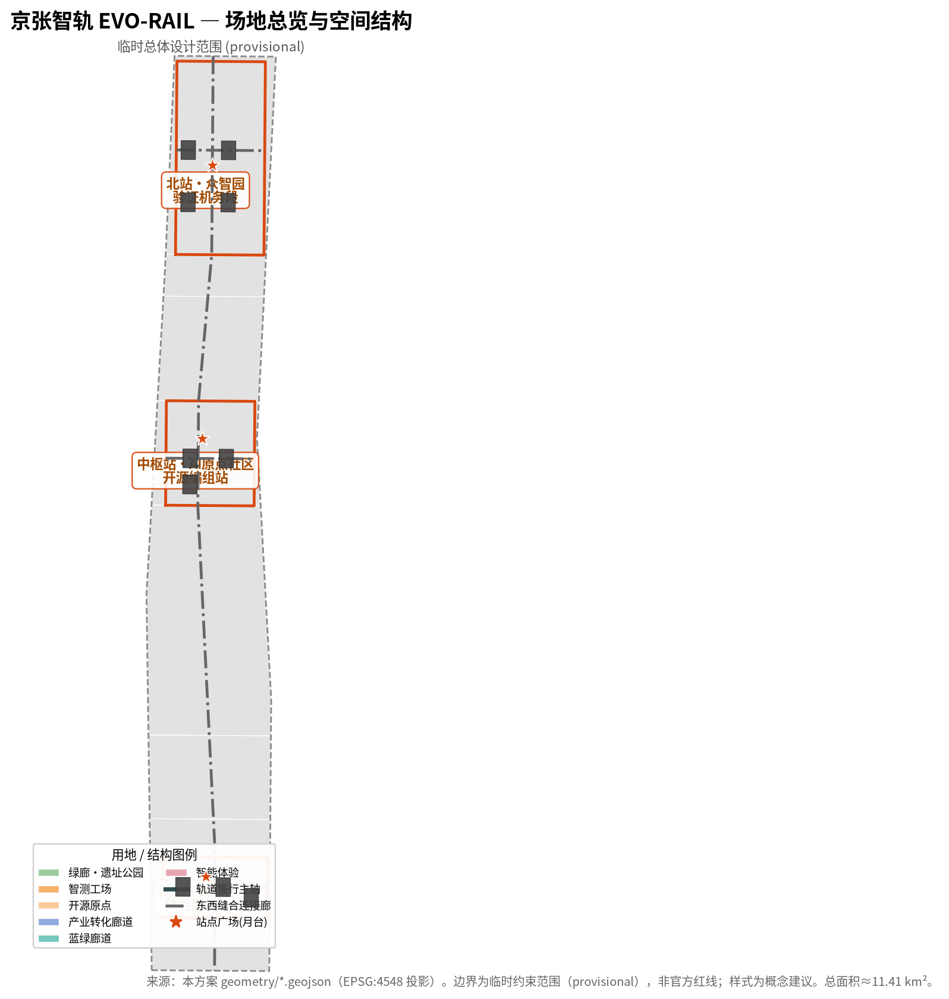
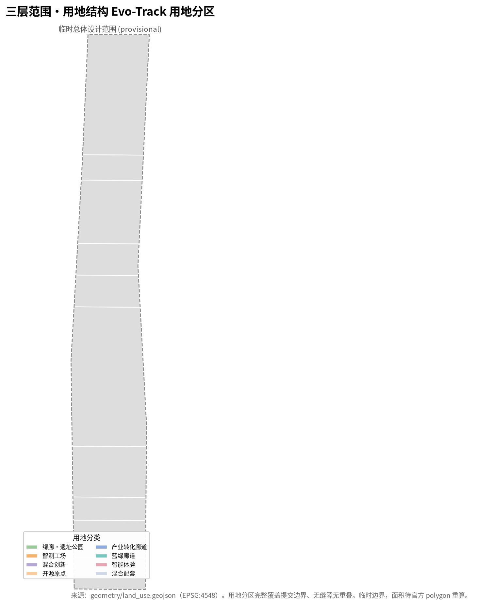
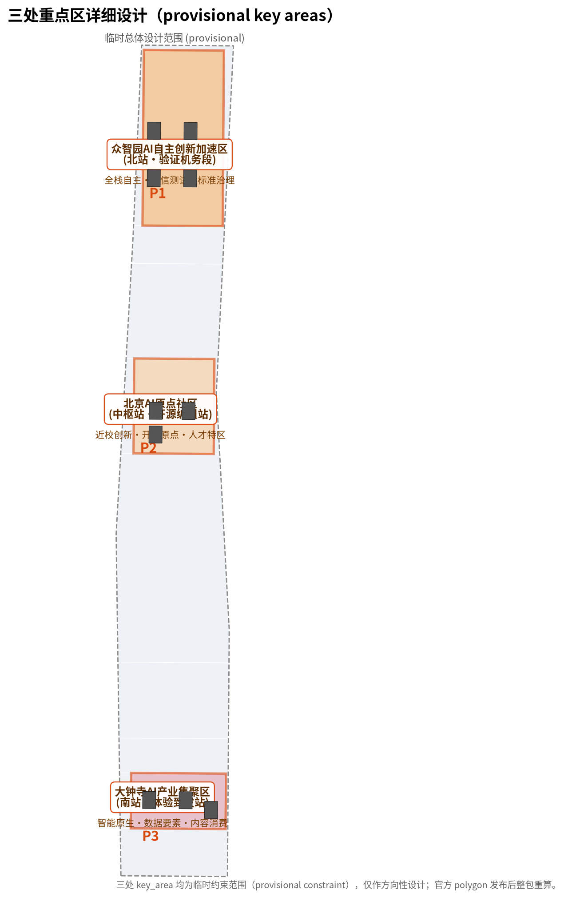
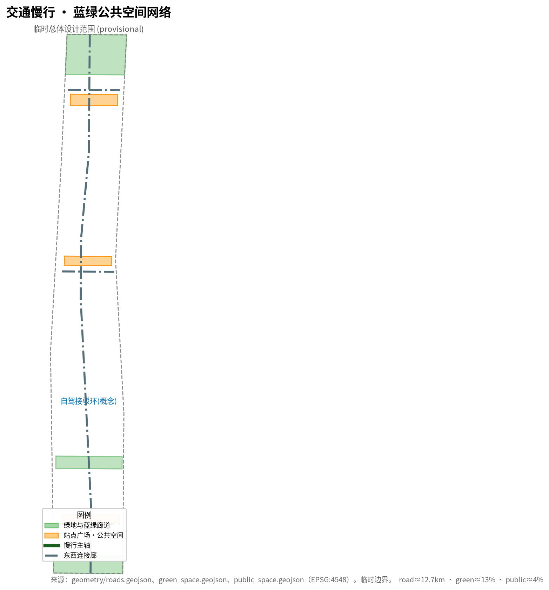
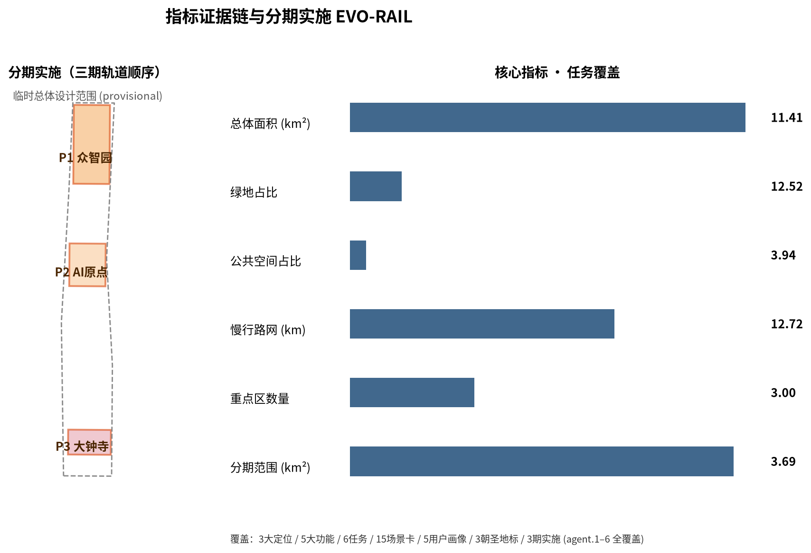

京张智轨 EVO-RAIL：百年轨道上的可进化AI城市带
以「可进化轨道 EVO-RAIL」为总体概念，把百年京张铁路从纪念性遗址转译为一条仍在运行、可自我升级的城市轨道系统：数据、算力、模型、人才与场景像列车一样在轨道上单向成环、双向回馈。统筹43.6km²研究范围、11.4km²总体设计范围与368.4ha三处重点区，提出「一站一模、一轨一协议」的三区两翼协同回路、15张AI场景卡、5类用户画像、3个AI朝圣地标与全球AI创新活动体系，全部空间建议均为概念建议（provisional boundary），不替代正式规划。
京张智轨 EVO-RAIL：百年轨道上的可进化AI城市带
设计依据与资料清单
本方案以北京市规划和自然资源委员会海淀分局发布的《百年京张AI创新带城市设计国际方案征集资格预审公告》为第一依据 来源，并以维护者登记的三层范围、三处重点区、枚举、指标、来源与专业标准清单为机器可读依据 来源。面向智能体的开源征集任务书（agent.1–agent.6）为六项创意性与运营性任务提供直接依据 来源。全部正式结论必须回溯到 data/source_registry.json 中标注为 usable_for_formal="yes" 的资料；provisional-only 与 background-only 资料只用于生成、展示和设计讨论，不得升级为官方边界、法定控规或正式评分证据 来源。
需要特别说明的是：本项目官方 SITE_BOUNDARY 与三处 KEY_AREA 精确 polygon 尚未向社会公布（资格预审包为密码保护下载，截至检索未取得公开精确边界）。本方案因此使用维护者依据公告文字四至与约面积在 EPSG:4548 下推定并校核的临时粗略边界（provisional constraint） 来源。该边界仅用于 AI 生成、展示与临时自检，不得视为 official redline、审批依据或精确面积复算依据；组织方数据缺口本身不阻断内容评分，但官方 polygon 发布后，site boundary、land use、roads、green/publ space、buildings、phasing 与全部面积/比例指标均须整包重算 指标。
方案达到控制性详细规划与规划综合实施方案的城市设计深度参照 标准 与 标准，用地分类遵循 标准。AI 场景与公共服务分别遵循生成式AI、无障碍与老年人友好相关法规的合规边界（完整标准清单见 standard_matrix.json）。上文这些标准、任务、来源、指标与设计深度的完整索引分别保存在 standard_matrix.json、compliance_matrix.json、sources.json、metrics.json 与 design_depth_matrix.json，正文只在关键判断处放置少量可校验引用，不做机器索引堆叠。

三层范围工作框架
方案按公告确定的三层范围组织：统筹研究范围（43.6 km²，北至北五环、东至京藏高速、南至西直门外大街、西至万泉河路）回答“世界级AI创新生态与未来城市形态如何组织”的战略问题 指标；总体设计范围（11.4 km²，京张遗址公园周边1–2公里城市与产业地区）把战略落实到城市更新、产业空间、交通市政与风貌控制 空间数据；重点区域范围（368.4 ha，自北向南为众智园AI自主创新加速区、北京AI原点社区、大钟寺AI产业集聚区）对三处片区进行详细设计 空间数据。
三层范围不是割裂的图纸集合：统筹研究决定产业链与城市形态判断，总体设计把判断转译为更新项目与空间结构，重点区域在站点尺度验证可实施性。方案在 compliance_matrix.json 中把公告 1.3、1.4、1.5 与 agent.1–agent.6 逐条映射到章节、图层、指标、图纸与 HTML 证据 深度。
由于三处重点区 polygon 现为临时粗略矩形（provisional constraint），本方案对其中的功能、建筑更新、公共空间与AI场景只作方向性设计；矩形边不得解释为地块或道路红线，任何精确面积均待官方 polygon 发布后重算 深度。

统筹研究范围产业与未来城市研究
总体概念：京张智轨 EVO-RAIL
本方案提出总体概念 「京张智轨 EVO-RAIL」：不把百年京张铁路看作一段被纪念封存的遗址，而把它转译为一条仍在运行、可自我升级的城市轨道系统。京张铁路的历史隐喻——轨道、机车、站点、信号——被重新激活为城市级的系统语言：
- 轨道（Track）＝数据、算力、模型与知识在城区间流动的基础设施骨架，对应蓝绿慢行连续的公共主轴 空间数据 空间数据。
- 列车（Train）＝AI能力/任务/场景作为可调度负载，在轨道上运行、进站、装卸、测试、回库，形成可进化的“班次”。
- 站点（Station）＝三处重点区作为不同属性和功能的车站/机务段：众智园是「测试／验证机务段」，AI原点社区是「开源／原点编组站」，大钟寺是「体验／商业到发站」深度。
- 协议（Protocol）＝每一次AI部署都遵循“上行数据与下行公共回报成对出现”的轨道协议，即在单车道上单向成环、双向回馈，保证AI增值回灌公共服务与文化空间。
这一概念让“百年京张文化带、都市AI生活体验带、AI融合创新带”三大定位不只停留在口号，而是落到“一条可运行的轨道”上：文化带＝铁轨记忆与信号体系，生活体验带＝车站公共体验路径，创新带＝模型与场景的沿线流动与再进化 来源。
三大定位、五大功能与三区两翼协同回路
方案明确三大定位（百年京张文化带／都市AI生活体验带／AI融合创新带），并把其落实为五大功能：AI全栈自主创新体系、世界级AI创新生态、AI+场景赋能新范式、智能化AI活力城市、AI治理全球话语权 来源。五大功能通过“三区两翼”协同回路运转：
- 三区：众智园全栈自主＋智测（AI治理话语权）、北京AI原点社区开源＋生态（世界级生态）、大钟寺智能原生新业态＋体验（场景赋能范式）空间数据 空间数据 空间数据。
- 两翼：中关村科技服务翼承担要素全球化配置、中关村IP与资本赋能 空间数据；小月河场景赋能翼连接AI场景与活力城市公共体验 空间数据。
协同回路可表述为：原点开源 → 众智验证 → 大钟寺转化体验 → 中关村资本与IP回灌 → 小月河场景反哺 → 再回到原点，形成一条“模型—数据—场景—资本—人才”的闭环轨道 标准。
全球AI创新生态案例分析
方案梳理 6 个全球AI创新生态案例，抽取可转化为空间、场景与运营机制的经验（详见 sources.json 与 compliance_matrix.json 的 agent.2 案例表）：
1. 美国硅谷/帕洛阿尔托：大学—风投—企业“十分钟步行创新圈”，对应“近校成果转化”与站城一体。 2. 中国深圳南山科技园：硬件开源＋快速试制，对应“可验证工场”与中试空间。 3. 新加坡裕廊创新区（Jurong Innovation District）：科技、制造、学习、生活混合，对应“边验证边生活”的TOD街区。 4. 伦敦国王十字区（King's Cross）：遗址更新＋知识街区＋公共空间活化，对应“遗址公园活力带”与东西缝合。 5. 日本筑波科学城/韩国板桥：政府主导园区向“创新社区”转型，对应“园区—社区”一体化治理。 6. 欧洲AI实验街区（如 Helsinki 的 AI 治理试点）：公共数字孪生与参与式治理，对应“可审计的AI公共界面”。
这些案例的共性可转化为三类空间机制：近校创新的TOD单元、可验证的中试/测试空间、面向公众的可体验AI公共界面，分别落到三处重点区与两翼 来源 深度。
未来AI城市形态与AI+交通、连续绿色空间
未来城市形态研究把AI视为改变工作、生活、社交、学习、交通与公共服务的系统性变量，而不是贴标签。方案把AI交通系统（自动驾驶接驳、无人配送、智能信号）、连续绿色空间（蓝绿慢行复合环）、创新服务设施与国际化生活氛围落实为可定位的功能区、节点、廊道与场景 深度 指标。产业战略指标（AI创新指数、人才密度、空间供给类型、AI+垂直应用重点区）写入 metrics.json 与 visual/index.html，并明确区分官方值、设计目标与待正式数据校准项。

总体设计范围城市更新与控规深度城市设计
总体设计范围达到控制性详细规划的城市设计深度 标准。方案以 geometry/land_use.geojson 作为完整用地分区：用地覆盖整个提交边界、无缝隙无重叠（已用 shapely 校验 union 恒等于 site_boundary，gap=0、overlap=0）空间数据 指标。
用地结构
方案在总体设计范围内形成若干用地功能区（land_use_code 详见 geometry/land_use.geojson）：绿廊北冠与绿廊南冠（京张遗址公园带，GREEN_HERITAGE_PARK）、智测工场·众智园（AI_ACCELERATION）、混合创新带（MIXED_INNOVATION）、开源原点·AI原点社区（AI_ORIGIN_COMMUNITY）、产业转化廊道（AI_INDUSTRY_CORRIDOR）、蓝绿活力廊道（GREEN_BLUE_CORRIDOR）、大钟寺智能体验街区（AI_EXPERIENCE_COMMERCE）与混合配套带（MIXED_SUPPORT）。核心用地面积指标见 metrics.json，例如绿色空间占比 green_ratio 与公共空间占比 public_space_ratio 指标 指标。
空间结构与城市更新
空间骨架是一条南北贯通的遗址公园慢行主轴（ROAD-NS-01，作为文化带与体验带的主载体）加上东西向三条连接廊（ROAD-EW-01/02/03），把三处重点区与两翼缝合 空间数据。城市更新强调“保留铁路记忆、更新低效空间、植入AI场景”：京张遗址公园带以保留与活化为主；众智园以更新低效产业空间为智测工场；大钟寺以更新商业空间植入智能原生新业态。任何具体地块的拆改留、道路红线、建筑高度与开发强度均须待官方控规条件确认，本方案只作方向性更新对象建议 深度 深度。
交通、轨道、市政与新型基础设施
交通策略围绕轨道站点一体化、道路微循环、慢行优先与端侧算力新型基础设施提出空间布局 深度 指标。方案把京张高铁隧道、13号线与遗址公园绿廊的平面共廊关系作为基础设施组织的锚点（概念来自可继续深化的“共廊接口”思路），以 roads.geojson 表达微循环与轨道接驳，以 green_space.geojson、public_space.geojson 表达蓝绿与公共空间网络 空间数据。涉及建筑高度、道路红线、退线、市政容量与地下空间的内容，若尚无官方控制条件，一律写为“待正式控规/工程条件确认”，不以 agent 推测值冒充审定指标 深度。
京张遗址公园活力带与城市风貌
方案把京张遗址公园组织为“活力带＋信号带”：向上承载文化叙事、公共体验与AI场景，向下以轨道信号语言（绿行、黄审、红停）作为城市公共界面 深度。城市风貌以“可读的信号体系＋连续的蓝绿底图＋克制的科技立面”为基调，避免过度娱乐化或网红化 标准。

用地、建筑规模与拆改留方案
用地结构由 geometry/land_use.geojson 完整表达，建筑基底由 geometry/buildings.geojson 表达（概念参考，非法定控制）空间数据 空间数据。方案遵循“保留铁路记忆、更新低效空间、植入AI场景”的拆改留逻辑：京张遗址公园带以保留与活化为主，众智园更新低效产业空间为智测工场，大钟寺更新商业空间植入智能原生新业态 深度。建筑规模、容积率、建筑高度与建筑密度因缺少官方控规条件而标记为待正式数据补齐，不提供审定值（见 metrics.json）。
交通、轨道、市政与公共服务设施
交通、轨道、市政与公共服务内容在“总体设计范围”一节已有说明：方案以轨道站点一体化与慢行优先组织交通 深度 指标，以 roads.geojson 表达微循环与轨道接驳 空间数据，新型基础设施与市政容量相关内容只要无官方控制条件一律写为“待正式控规/工程条件确认” 深度。公共服务设施（创新服务、人才生活服务、无障碍人工服务）遵循无障碍与老年人友好法规的合规边界（见 standard_matrix.json）。
蓝绿空间、公共空间与城市风貌
蓝绿空间与公共空间以“蓝绿慢行复合环＋站点广场”组织 深度，它是“都市AI生活体验带”的空间载体：green_space.geojson 的绿廊北冠、绿廊南冠与蓝绿活力廊道在总体设计范围内构成连续底图 空间数据，把三处重点区之间原本割裂的工业与商业地块用绿廊缝合；public_space.geojson 的三处站点广场（月台，PUBLIC-N/M/S）成为承接入流的公共节点，也是AI场景卡（开源广场、成果发布会、体验馆）的落地载体 空间数据。
设计意图在于：先以“信号—轨道”符号系统统一分散的城市风貌要素，再用蓝绿慢行环把文化带、体验带与创新带在空间上连成可步行的回路；每个站点广场同时是“月台、信号位、荣誉展示位”三者合一的公共界面，把AI运行状态、贡献者荣誉与人群活动并置在可读的公共场域。绿地占比 green_ratio、公共空间占比 public_space_ratio 与慢行路网长度 road_network_length_m 均由本包 geometry 在 EPSG:4548 复算（见 metrics.json），用于横向比较与分期前后测度。
需说明的数据缺口：因官方边界与控规未发布，绿地率、广场规模与风貌控制依据均为待正式控规条件确认，green_ratio/public_space_ratio 为基于临时边界的占位性复算值；官方 polygon 发布后这些随蓝绿图层一并整包重算，本现状仅作概念方向。
更新项目清单、实施政策与分期计划
整体更新项目按“轨道顺序”分三期实施（phasing.geojson）：P1 众智园加速区与北段绿廊、P2 AI原点社区与中部绿廊、P3 大钟寺体验街区与南段绿廊 空间数据 深度 指标，分期即“先验证、再开源、后体验”，让每一期都能独立运行又互相衔接，使轨道上始终有“班次”在运行而不至于空置。对应 land_use.geojson 的用地分区，P1 聚焦 AI_ACCELERATION 智测工场，P2 聚焦 AI_ORIGIN_COMMUNITY 开源原点，P3 聚焦 AI_EXPERIENCE_COMMERCE 大钟寺体验街区，支撑从测试、开源到消费体验的完整链条 空间数据。
实施政策强调制度先行：要素保障、测试沙箱制度、场景开放办法、人才住房等均以“可供专业团队深化的建议”呈现，不构成政府承诺或投资安排（详 compliance_matrix.json 与 report/copyright_statement.md）深度。每一期都设置“阶段自检—回滚—再发布”的轨道运营节奏，把 AI 场景开放与物理实施解耦，降低一次性大规模拆建风险。
数据缺口：项目清单的拆改留对象、投资测算、开发时序与审批判断均属概念建议；具体地块、建筑高度、容积率与控制条件待官方控规/权属资料补齐，phasing 与 land_use 会随官方 polygon 发布整包重算。
重点区域详细设计
三处重点区均引用对应 geometry/key_areas.geojson feature，并达到规划综合实施方案方向性深度 深度：
众智园AI自主创新加速区（北站·验证机务段）
- 定位：AI全栈自主创新与可信AI测试验证的“机务段”，承载国家AI平台、标准制定与安全治理方向 空间数据。
- 空间结构：智测工场＋中试空间＋产业展示＋清河文化绿廊，形成“测试—回库—再出发”的站场单元。
- 建筑更新：以保留更新低效产业空间为主，植入
AI_LAB、TESTING_RIG、ACCEL_HUB类建筑基底（概念参考）空间数据。 - AI场景：可信AI测试场、自主算力benchmark、安全治理沙箱（见场景卡 S01–S03）。
- 实施风险：涉及计算负荷与信息安全，须待官方场地与工程条件确认。
北京AI原点社区（中枢站·开源编组站）
- 定位：近校创新、开源原点与人才特区的“编组站”，承载开源体系、成果孵化与品牌活动 空间数据。
- 空间结构：开源原点广场＋近校成果转化街＋人才生活配套，实现“校区—园区—社区”慢行缝合。
- 建筑更新：拆改留分类建议以保留高校周边生活区、更新低效楼宇为主，植入
OPEN_SOURCE_HUB、COMMUNITY空间数据 空间数据。 - AI场景：开源协作、成果发布、人才特区（场景卡 S04–S06）。
- 实施风险：涉及校园权属与文保，须遵循
HERITAGE/权属边界，不擅自改造企业或校园建筑。
大钟寺AI产业集聚区（南站·体验到发站）
- 定位：智能原生新业态与内容消费的“到发站”，承载领军企业、智能体、智能终端与数据要素 空间数据。
- 空间结构：智能体验街区＋规划绿地复合利用＋大钟寺站四象限步行连通。
- 建筑更新：以更新商业与商务空间植入
EXPERIENCE_MALL、INDUSTRY_SERVICE、DATA_TERMINAL空间数据。 - AI场景：智能原生消费、数字资产、内容体验（场景卡 S07–S10）。
- 实施风险：涉及商业更新与交通组织，不给出工程可行性结论。
AI 创新生态、人才画像与 AI+ 场景
用户画像（5类）
方案定义覆盖 AI 人才、企业与居民的 5 类用户画像：AI研发者/工程师、高校师生与创业者、园区与企业主、市民与游客、老人与特殊群体。每类画像都有对应的空间、服务与AI场景需求，并遵循无障碍与老年人友好要求（保留人工服务通道）标准 标准。
AI场景卡（15张，覆盖10+）
方案形成 15 张AI场景卡（至少 10 张），按“智能原生新业态／公共体验／产业测试验证”三类组织（完整场景卡见 compliance_matrix.json 与 visual/index.html）：
- 产业测试验证（3+）：S01可信AI测试场、S02全栈自主算力benchmark、S03安全治理沙箱（对应“3个产业测试验证场景”要求）。
- 体验与公共：S04开源协作广场、S05成果发布会、S06人才特区导览、S07智能原生消费街区、S08数字资产体验、S09内容创作工坊、S10大钟寺沉浸式内容馆。
- 交通与生活：S11自动驾驶接驳环、S12无人配送末公里、S13智能信号慢行优先、S14AI+教育/医疗便民点、S15AI+法律/生活服务长椅。
所有场景均明确“是否可人工复核/可回滚”、是否涉及隐私，并遵守《生成式人工智能服务管理暂行办法》适用范围与人工复核边界 标准；未成熟技术不写成可全面部署，测试场景不写成已批准运营 来源。

AI公共空间、智能原生新业态与AI朝圣地标
AI公共空间与东西缝合
方案提出站点广场（public_space.geojson 的 PUBLIC-N/M/S，作为车站“月台”公共节点）与蓝绿复合环，形成“东西缝合、南北贯通”的公共空间网络 空间数据。京张遗址公园作为主轴公共空间，把三处重点区串联为可步行、可骑行、可体验的活力度带 深度。
三个AI朝圣地标
方案提出 3 个AI朝圣地标（概念建议，待专业深化）：
1. 原点钟（Origin Bell）——AI原点社区：以京张老钟为原型，每次开源发布敲响，成为“技术开源日”的城市声景地标。 2. 验证信号塔（Verify Beacon）——众智园：以铁路信号塔为原型，用红/黄/绿灯光实时回显AI系统运行与可信状态，成为“可见、可复核”的AI公共界面。 3. 到发屏（Arrival Board）——大钟寺：以车站时刻表为原型，把模型/内容/数据的“到发”动态作为城市公共信息界面。
三处地标共同构成“从开源到验证再到体验”的朝圣动线，并与荣誉展示体系（开发者/贡献者名录墙）结合 来源。
智能原生新业态与公共空间组件库
大钟寺围绕领军企业与智能终端，提出智能原生消费与商务场景；公共空间组件库（长椅信息终端、无人配送站点、AI导览桩、无障碍人工呼叫柱等）作为可复用部件，支撑整个一带的公共体验 深度。
百年京张文化、中关村文化与AI新文化融合叙事
文化叙事
方案以“铁轨的记忆与新轨的想象”为叙事主线，把三层文化融入一条时间轨道：
- 百年京张文化：京张铁路（詹天佑主持、中国人自主修建的里程碑）作为“自主创新起点”的核心记忆，对应今日AI全栈自主创新。
- 中关村创新文化：从电子一条街到中关村的迭代史，作为“持续进化”的精神底座。
- AI新文化：开源、可信、可验证、人本回灌，作为“面向下一个百年的文化新增量”。
三层文化通过一套统一的信号/轨道符号系统表达（标识、导视、色彩、声景），避免文化沦为科技的装饰或口号 来源。
命名体系与Logo方向
- 主名称：京张智轨（EVO-RAIL）。
- 英文名称：EVO-RAIL — Jing-Zhang AI Innovation Belt。
- 命名体系：三处重点区分别以“机务段／编组站／到发站”命名（智测工场、开源原点、体验到发站），两翼为“中关村科技服务翼、小月河场景赋能翼”，公共节点为“月台”“道口”“信号塔”。
- Logo方向：以一条贯通铁轨与一条上升的“进化代码线条”双线交叠为视觉母题，三色信号（绿/黄/红）作为可延展的品牌系统，兼顾国际传播与本地记忆；不直接照搬企业/机构标识，字体与图形均使用可授权/自绘素材 来源 深度。
一带全球AI创新活动体系与长期运营
年度活动体系与品牌IP
方案提出年度“轨道时刻表”活动体系：开源日、验证周、体验季、开发者大会、朝圣导览季等，以“信号/时刻表”作为统一品牌IP，形成可沉淀的年度节奏与传播视觉系统 来源。
开发者社区与场景开放运营
- 开发者社区运营：以“贡献登记—荣誉上榜—成果许可”机制，把每一位贡献者沉淀进公共知识库与荣誉展示体系 来源。
- 场景开放运营：以“开放场景＋测试沙箱＋回滚机制”让企业与社区可申请、可测试、可回退，并明确人工复核边界 标准。
- 招引与转化：从活动观众到开发者、从测试到入区、从场景到落地的“到发转化路径”，避免只有宣传没有运营机制 深度。
长期品牌资产机制
方案把“信号语言、站点命名、地标时刻表、贡献名录”作为一带长期品牌资产，由可持续运营主体维护并持续迭代；涉及招商、政策、资金与活动安排的内容均表述为概念建议，不写成已确定承诺 来源。
指标体系、面积复算与合规矩阵
本方案全部面积/比例/长度指标由 geometry/*.geojson 在 EPSG:4548 投影后复算得到（见 metrics.json）：site_area 11,412,825 m²，land_use 完整覆盖且 union 恒等于 site，green_ratio≈0.13，public_space_ratio≈0.04，road_network≈12.7km，phase_area≈3,692,893 m²，key_area_count=3 指标 指标 指标。FAR、建筑高度、建筑密度、绿地率等法定控制值因缺少官方控规条件而标记为“待正式数据补齐（pending official data）”，不伪造审定值（详见 metrics.json）。公告任务覆盖见 compliance_matrix.json，专业标准响应见 standard_matrix.json，设计深度证据见 design_depth_matrix.json。
风险、版权与合规说明
本方案为AI agent 生成的概念性开源共创建议，不替代正式规划，不构成政府审定结论 来源。所有空间落地建议均为“概念建议／参考方案／可供专业团队深化研究”。方案基于公开或用户提供且已清权资料，未使用秘密图件、非公开空间数据、内部控制指标或个人隐私；涉及建设强度、建筑高度、道路线位、土地权属的内容为概念建议，不伪装为官方审定结论。provisional boundary 的使用限制、缩略图仅作展示、正式 polygon 发布后的复算要求与版权声明详见 assumptions.json、report/copyright_statement.md 与 sources.json 深度。
参考资料
1. 北京市规划和自然资源委员会海淀分局《百年京张AI创新带城市设计国际方案征集资格预审公告》（2026-05-09）。引用 ID：DATA-SRC-OFFICIAL-ANNOUNCEMENT-20260509；URL 见 sources.json。 2. 面向全球智能体开展“百年京张AI创新带城市设计开源征集”的任务书摘录（用户提供清权资料，2026-05-18）。引用 ID：DATA-SRC-AGENT-TASKBOOK-20260518。 3. 住房和城乡建设部《城市设计管理办法》（2017-03-14）。引用 ID：DATA-SRC-MOHURD-URBAN-DESIGN-MEASURES。 4. 住房和城乡建设部《城市、镇控制性详细规划编制审批办法》。引用 ID：DATA-SRC-MOHURD-CONTROL-DETAILED-PLANNING。 5. 自然资源部《国土空间调查、规划、用途管制用地用海分类指南》（2023-11）。引用 ID：DATA-SRC-MNR-LAND-USE-CLASSIFICATION-202311。 6. 国家互联网信息办公室等《生成式人工智能服务管理暂行办法》（2023-08-15 施行）。引用 ID：DATA-SRC-GENERATIVE-AI-INTERIM-MEASURES。 7. 《中华人民共和国无障碍环境建设法》（2023-09-01 施行）。引用 ID：DATA-SRC-BARRIER-FREE-ENVIRONMENT-LAW。 8. 国务院办公厅《关于切实解决老年人运用智能技术困难实施方案》（国办发〔2020〕45号）。引用 ID：DATA-SRC-ELDERLY-SMART-TECH-PLAN-2020-45。 9. 维护者登记的三层范围与三处重点区临时粗略 polygon（provisional_only）。引用 ID：DATA-SRC-PROVISIONAL-BOUNDARIES-20260605。 10. data/source_registry.json 公开来源登记表与 brief/site-package/ 站点包（SITE-PACKAGE）。
以上来源的完整元数据（发布者、URL、获取时间、许可、复用边界、限制）见本包 sources.json。来源 来源